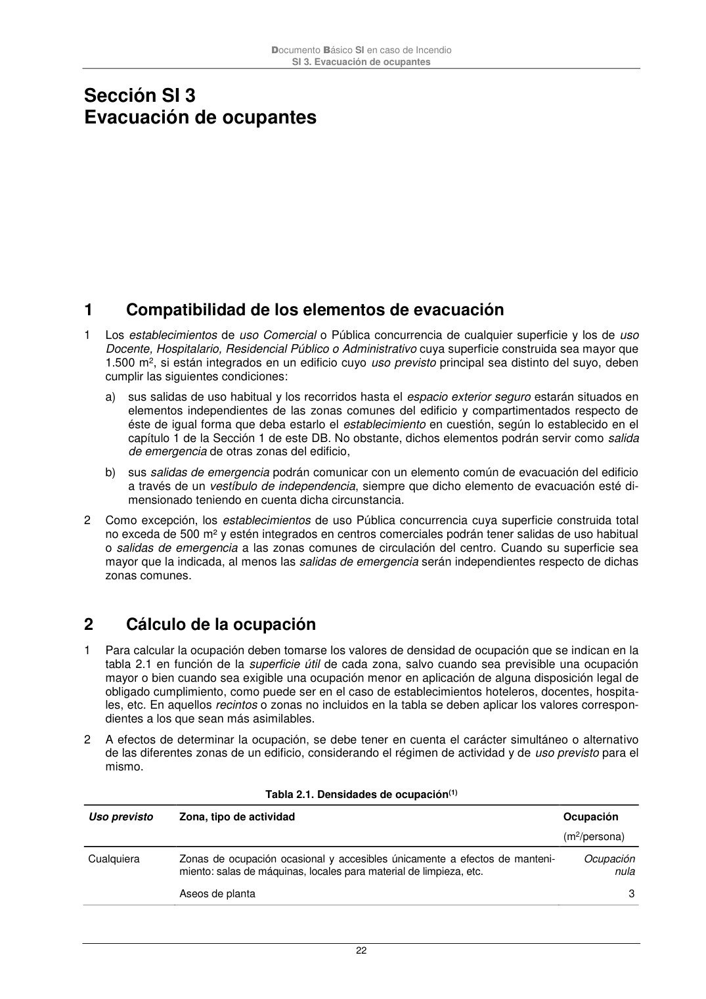
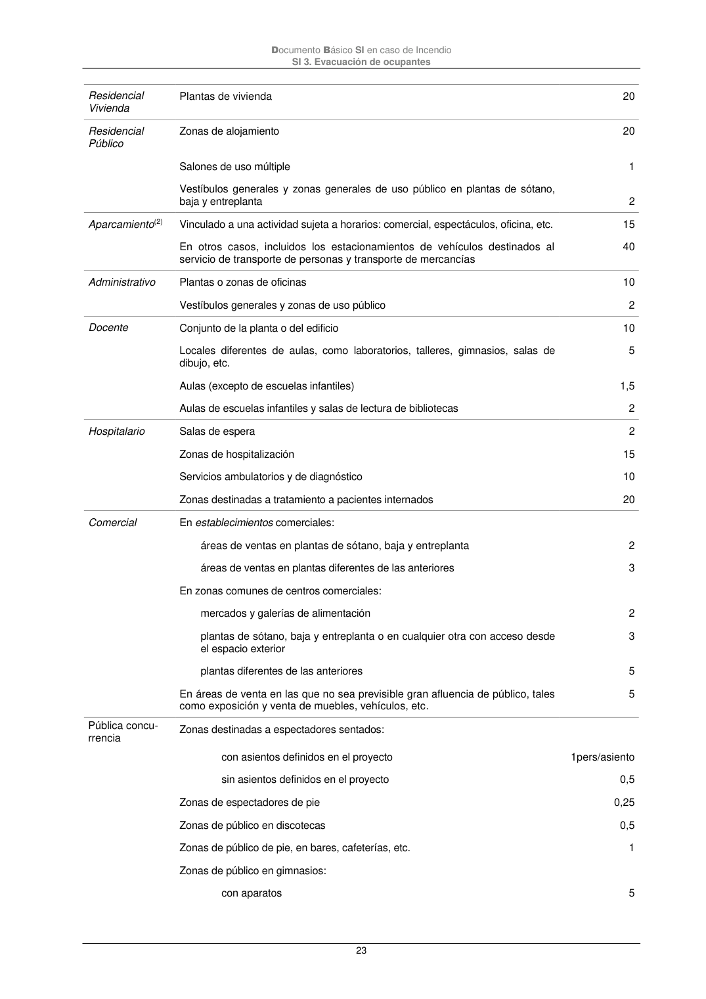
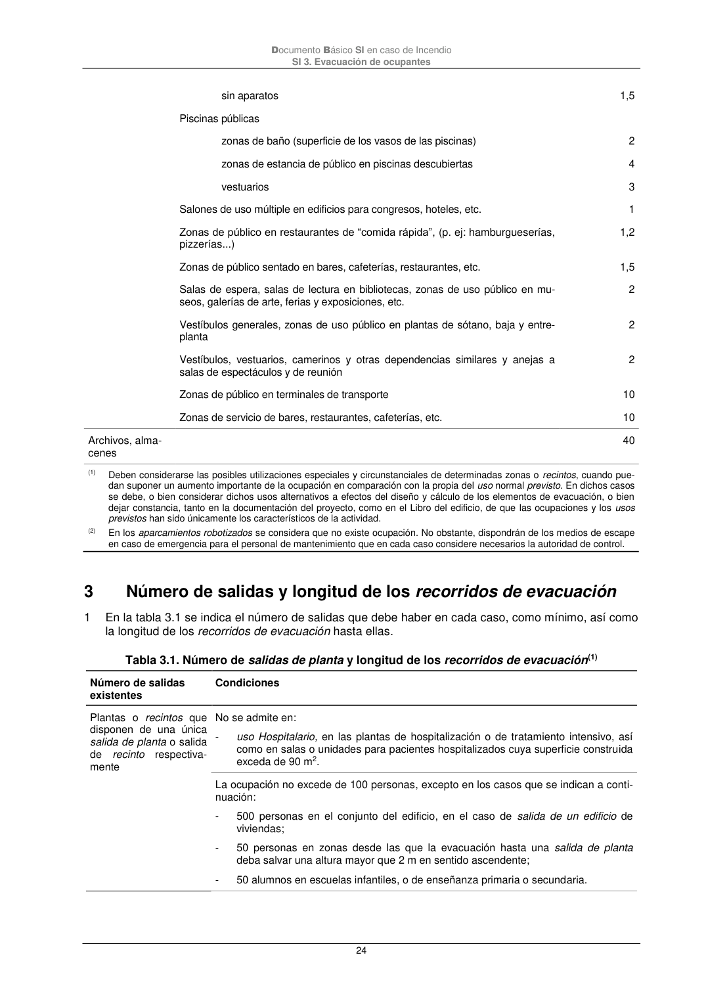

DB-SI Seguridad en caso de incendio · edición 2025-03-04 · capa oficial
Documento DB-SI-oficial · SHA-256 del PDF 0a2e78cd62471d9cc5cfe2efbc6aa39fdbad73c124aea7b039f9de96c141e105
Copia fiel del PDF fuente · Fuente oficial
Ficha de la disposición en la fuente oficial
Formatos: JSON del segmento · Markdown
Cálculo de la ocupación 1 Para calcular la ocupación deben tomarse los valores de densidad de ocupación que se indican en la tabla 2.1 en función de la superficie útil de cada zona, salvo cuando sea previsible una ocupación mayor o bien cuando sea exigible una ocupación menor en aplicación de alguna disposición legal de obligado cumplimiento, como puede ser en el caso de establecimientos hoteleros, docentes, hospita- les, etc. En aquellos recintos o zonas no incluidos en la tabla se deben aplicar los valores correspon- dientes a los que sean más asimilables. 2 A efectos de determinar la ocupación, se debe tener en cuenta el carácter simultáneo o alternativo de las diferentes zonas de un edificio, considerando el régimen de actividad y de uso previsto para el mismo. Tabla 2.1. Densidades de ocupación(1) Uso previsto Zona, tipo de actividad Ocupación (m2/persona) Cualquiera Zonas de ocupación ocasional y accesibles únicamente a efectos de manteni- miento: salas de máquinas, locales para material de limpieza, etc. Ocupación nula Aseos de planta 3 Documento Básico SI en caso de Incendio SI 3. Evacuación de ocupantes 23 Residencial Vivienda Plantas de vivienda 20 Residencial Público Zonas de alojamiento 20 Salones de uso múltiple 1 Vestíbulos generales y zonas generales de uso público en plantas de sótano, baja y entreplanta 2 Aparcamiento(2) Vinculado a una actividad sujeta a horarios: comercial, espectáculos, oficina, etc. 15 En otros casos, incluidos los estacionamientos de vehículos destinados al servicio de transporte de personas y transporte de mercancías 40 Administrativo Plantas o zonas de oficinas 10 Vestíbulos generales y zonas de uso público 2 Docente Conjunto de la planta o del edificio 10 Locales diferentes de aulas, como laboratorios, talleres, gimnasios, salas de dibujo, etc. 5 Aulas (excepto de escuelas infantiles) 1,5 Aulas de escuelas infantiles y salas de lectura de bibliotecas 2 Hospitalario Salas de espera 2 Zonas de hospitalización 15 Servicios ambulatorios y de diagnóstico 10 Zonas destinadas a tratamiento a pacientes internados 20 Comercial En establecimientos comerciales: áreas de ventas en plantas de sótano, baja y entreplanta 2 áreas de ventas en plantas diferentes de las anteriores 3 En zonas comunes de centros comerciales: mercados y galerías de alimentación 2 plantas de sótano, baja y entreplanta o en cualquier otra con acceso desde el espacio exterior 3 plantas diferentes de las anteriores 5 En áreas de venta en las que no sea previsible gran afluencia de público, tales como exposición y venta de muebles, vehículos, etc. 5 Pública concu- rrencia Zonas destinadas a espectadores sentados: con asientos definidos en el proyecto 1pers/asiento sin asientos definidos en el proyecto 0,5 Zonas de espectadoresde pie 0,25 Zonas de público en discotecas 0,5 Zonas de público de pie, en bares, cafeterías, etc. 1 Zonas de público en gimnasios: con aparatos 5 Documento Básico SI en caso de Incendio SI 3. Evacuación de ocupantes 24 sin aparatos 1,5 Piscinas públicas zonas de baño (superficie de los vasos de las piscinas) 2 zonas de estancia de público en piscinas descubiertas 4 vestuarios 3 Salones de uso múltiple en edificios para congresos, hoteles, etc. 1 Zonas de público en restaurantes de “comida rápida”, (p. ej: hamburgueserías, pizzerías...) 1,2 Zonas de público sentado en bares, cafeterías, restaurantes, etc. 1,5 Salas de espera, salas de lectura en bibliotecas, zonas de uso público en mu- seos, galerías de arte, ferias y exposiciones, etc. 2 Vestíbulos generales, zonas de uso público en plantas de sótano, baja y entre- planta 2 Vestíbulos, vestuarios, camerinos y otras dependencias similares y anejas a salas de espectáculos y de reunión 2 Zonas de público en terminales de transporte 10 Zonas de servicio de bares, restaurantes, cafeterías, etc. 10 Archivos, alma- cenes 40 (1) Deben considerarse las posibles utilizaciones especiales y circunstanciales de determinadas zonas o recintos, cuando pue- dan suponer un aumento importante de la ocupación en comparación con la propia del uso normal previsto. En dichos casos se debe, o bien considerar dichos usos alternativos a efectos del diseño y cálculo de los elementos de evacuación, o bien dejar constancia, tanto en la documentación del proyecto, como en el Libro del edificio, de que las ocupaciones y los usos previstos han sido únicamente los característicos de la actividad. (2) En los aparcamientos robotizados se considera que no existe ocupación. No obstante, dispondrán de los medios de escape en caso de emergencia para el personal de mantenimiento que en cada caso considere necesarios la autoridad de control. 3


